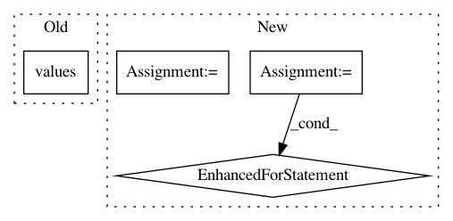

e4d313478124e00a931ec40ab25643accad88641,beancount_import/source/generic_importer_source.py,ImporterSource,prepare,#ImporterSource#,55
Before Change
results.add_pending_entries(
[ImportResult(entry.date, [entry], None)
for entry in entries.values()
]
)
def _is_existing(self, journal: "JournalEditor", entry: Directive) -> bool:
After Change
uncleared_entries = defaultdict(list)
for hash_ in entries:
// number of matching cleared entries in journal
n = len(similar_entries_in_journal(entries[hash_][0],
journal.entries,
self.comparator))
// If journal has n cleared entries for this hash, pick remaining
for entry in entries[hash_][n:]:
// add importer name as sorce description to source postings
self._add_description(entry)
// balance amount
self.balance_amounts(entry)
uncleared_entries[hash_].append(entry)
results.add_pending_entries(
[ImportResult(entry.date, [entry], None)
for entry in itertools.chain.from_iterable(uncleared_entries.values())
]
In pattern: SUPERPATTERN
Frequency: 3
Non-data size: 4
Instances
Project Name: jbms/beancount-import
Commit Name: e4d313478124e00a931ec40ab25643accad88641
Time: 2020-08-06
Author: dumbpyx@gmail.com
File Name: beancount_import/source/generic_importer_source.py
Class Name: ImporterSource
Method Name: prepare
Project Name: cesium-ml/cesium
Commit Name: e547a82c24b37c157bc9b40d2724a7b1fd0a7b0f
Time: 2017-04-17
Author: brettnaul@gmail.com
File Name: cesium/featurize.py
Class Name:
Method Name: save_featureset
Project Name: IDSIA/sacred
Commit Name: 443e179cfaf8f5502002fbd8e480685d2991eade
Time: 2017-09-14
Author: qwlouse@gmail.com
File Name: sacred/initialize.py
Class Name:
Method Name: create_run